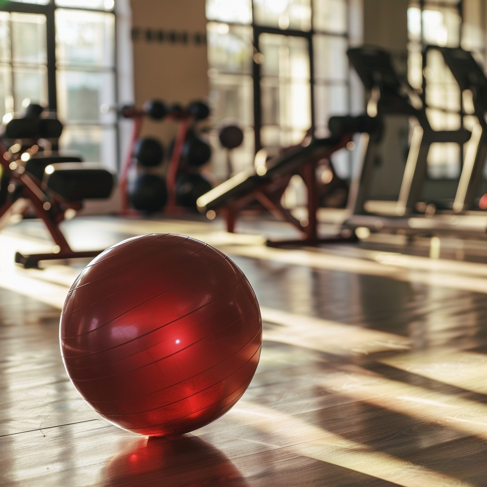
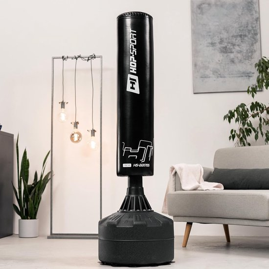
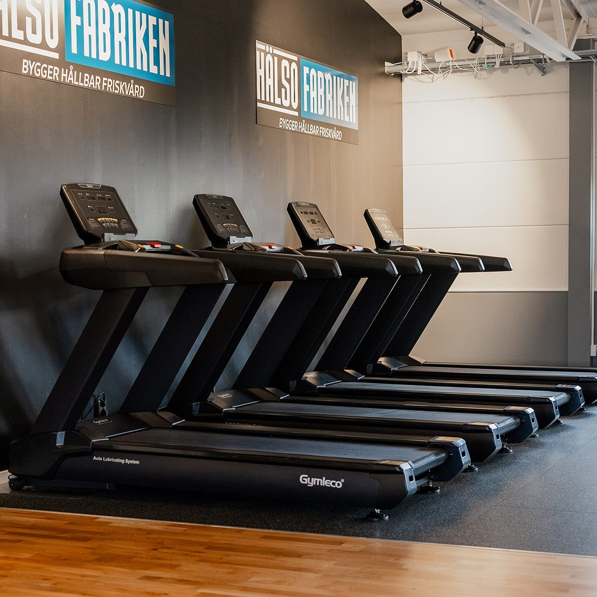

Tässä voit katsoa meidän tuotteita:

Joogapallot
Jooga- ja pilatespallot ovat pieniä, pehmeitä palloja, joita käytetään vahvistamaan keskivartaloa, kehittämään tasapainoa ja harjoittamaan lihasvoimaa.
Nämä monipuoliset pallot sopivat sekä jooga- ja pilatesharjoituksiin että fysioterapiaan.

Nyrkkeilysäkit
Nyrkkeilysäkki on loistava apuväline tehokkaaseen kotitreeniin. Nyrkkeilytreeni kehittää monipuolisesti lihaskuntoa ja parantaa aerobista kuntoa, koordinaatiokykyä sekä tasapainoa.
Nyrkkeilytreeni sopii mainiosti myös paljon istumatyötä tekeville henkilöille, sillä se avaa tehokkaasti jumiutuneen niskan, hartiat ja selän.

Juoksumatot
Juoksumattoharjoittelu sopii lähes kaikille: aktiiviliikkujille, satunnaisesti kuntoileville, painonpudotusta haluaville, lämmittelijöille sekä monille muille.
Juoksumatto on loistava kuntoilulaite miltei kaikille kuntoilijoille kuntotasosta, koosta tai iästä riippumatta.